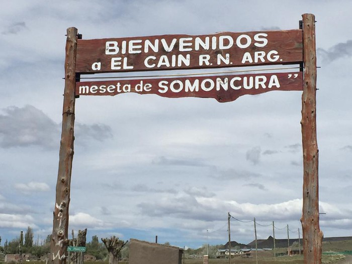
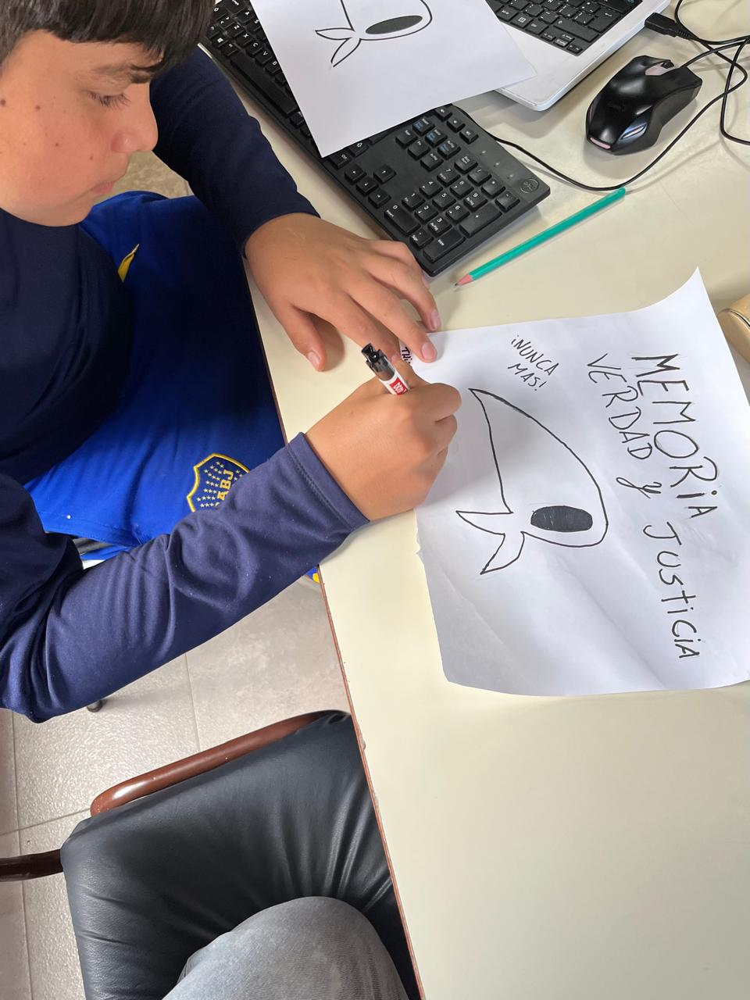

Conocemos El Caín
Aprendemos juntos y juntas: compartimos el trabajo de Jeremías Orellano en formato video.
05 / 08
Producciones y proyectos de quienes hacen la revista.

Aprendemos juntos y juntas: compartimos el trabajo de Jeremías Orellano en formato video.

En vísperas del 50 aniversario del golpe militar, tomamos la consigna de los organismos de derechos humanos y hicimos florecer historias con pañuelos blancos.

282 figuritas de 27 sedes: el álbum que se fue armando ficha por ficha, como en los álbumes de Panini.